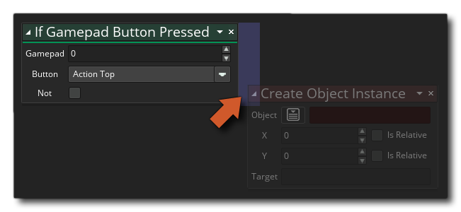

If Gamepad Button
Pressed If Gamepad Button
Pressed
If Gamepad Button
Pressed If Gamepad Button
Pressed
With this action you can poll the gamepad to see if any button is currently being pressed. The action will return true every step that the gamepad button is being pressed (and held) down, or false otherwise, although if you click the not modifier you can then check to see if the button is not being pressed, ie: the action will return true while no button is pressed and false if there is. If you only need to check for a single button press then use the action if gamepad button down.
Note that to add actions into the "if" block, they should be dropped to the side of the action, as shown in the image below:
 These actions will now be run if the "if" evaluates to true, while any actions dropped elsewhere will be performed after the "if" block.

Argument Description Gamepad The gamepad index. Button The name of the button to check. Not Negate the check (true becomes false and vice versa)

The above action block code polls the button state of gamepad 0 every step and if a button is being held down it checks for the initial button down press. If the check is true on the initial down press, a sound is played, then, while the button is held down, the sprite blending is changed to red. If the button is not being held down, a check is done on the button release to reset the blending colour to white.